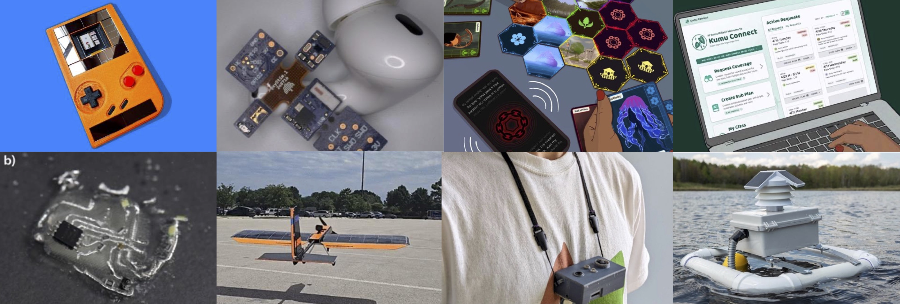

About Me
I work towards a sustainable future for computing informed by my Native Hawaiian (Kānaka Maoli) heritage. I apply my work in the field of embedded systems and AI to a broad number of applications: including large-scale sensing for sustainability and conservation, wearables, interactive devices, education platforms, soft robotics, and computational design and fabrication. My work is meant to provoke, by proposing alternate, sometimes Indigenous, designs and systems for computing and AI.
Iʻm motivated by global scale applications ranging from health to conservation, interaction, and education. I explore and develop new hardware designs, systems, interaction techniques, tools, curriculum, and programming abstractions so that anyone can learn about, design, debug, and deploy more sustainable computing and AI systems that work despite frequent power failures, constrained resources, and unpredictable conditions. I direct Ka Moamoa at Georgia Tech, a multidisciplinary research lab designing computing such that it is more sustainable, durable, community-oriented, and place-based. My work is supported by multiple grants from the NSF, NIH, ARPA-H, DARPA, DoD, the Sloan Foundation, and industry.
I won a Presidential Early Career Award for Scientists and Engineers (PECASE) in 2025, was named a Sloan Fellow in Computer Science, won my NSF CAREER and a VMware Early Career Faculty Award in 2022. I was named to Popular Science's Brilliant 10, the AISES Most Promising Scientist, and won a 3M Non-Tenured Faculty Award in 2021.
Press highlights: Popular Science, Scientific American, The Mirror, Washington Post, TechCrunch, Gizmodo, Bulletin of the Atomic Scientists, Independent, The Wall Street Journal, CNET, Communications of the ACM, BBC, Guinness Book of World Records, Seeker, ACM Tech News.

Ongoing Research Projects

- 🌱Large-scale Sustainable Sensing: soil powered compute, sustainable cyber-infrastructure and data sovereignty.
- ⚡Computers that never die: Power failure resilient computing and inference, including modular hardware, runtimes, tools.
- ❤️Mobile Health: Building smart face masks, wearable cameras, eating monitoring, and smoking detection.
- 💉Implantable Pharmacy: ovarian cancer treatment with implanted living cells, and sleep therapy.
- ☁️Carbon-aware Edge Computing: carbon nutrition labels and design tools for Internet-of-Things and Edge devices.
- 🤖Sustainable Robotics and Fabrication: Energy harvesting flapping UAVs, soft recyclable actuators, and dissolvable electronics.
- 🎮Low/No Power Interactive Systems: interaction powered devices, a battery-free Game Boy, and Python or Block based programming for energy harvesting devices.
- 📖Place-based CS/AI Education: Hawaiian bi-lingual curricula design with GenAI, AI bias in low-resource language education, and place-based physical computing
I am always looking for motivated students and skilled postdoctoral scholars to join my lab.